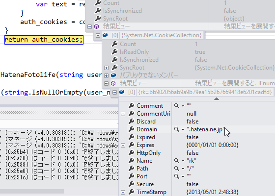

Windows Store Apps：Cookie を取得して、ログインが必要なページを閲覧する（はてなフォトライフ）
公開日：

さてはて、Widows Store Apps: WSSE 認証（はてなフォトライフ） - だるろぐ で AtomPub API（はてなフォトライフAtomAPI - Hatena Developer Center）を無事叩けるようになったのだが、これがショボい。ファイルの操作系（EditURI）はともかく、情報の取得系（FeedURI）がとくにヘボくて、ちゃんと情報が取れないわ*1、ルートフォルダの内容しか取得できないわ。どうやら「情報の取得には RSS を使ってね」ということのようだ。なんだそれ。確かにそれでたいていは十分かもしれないけど、フォルダの列挙なんかはどうするんだ……こんなんだったらスクレイピング前提で組んだほうが早かった。
まぁ、それはともかく。
RSS を使えば（直近の）画像は取得できるが、非公開フォルダの画像に関しては、当然ログインが必要だ。なんとかして Cookie を取得し、それを使いまわさなければならない。というわけで、やってみた。
ログイン Cookie の取得
https://www.hatena.ne.jp/login にユーザー名とアカウントを POST してログインする。
private CookieContainer auth_cookies = null;public CookieContainer AuthCookie { get { if (auth_cookies == null) { var base_address = new Uri("https://www.hatena.ne.jp/"); var cookie_container = new CookieContainer();
using (var handler = new HttpClientHandler() { CookieContainer = cookie_container }) using (var client = new HttpClient(handler) { BaseAddress = base_address }) { var content = new FormUrlEncodedContent( new Dictionary<string, string> { { "name", UserName}, { "password", Password}, { "auto_login", "1"}, });
var result = client.PostAsync("/login", content).Result; var text = result.Content.ReadAsStringAsync().Result; } auth_cookies = cookie_container; } return auth_cookies; } }
プロパティにしてみた。初めて利用する際にログイン処理が行われ、Cookie を取得・格納する。

自前で Microsoft のテクニカル ドキュメントの以前のバージョン | Microsoft Docs を用意して、HttpClient の動作をカスタマイズしてあげるのがポイント。ここでは CookieContainer Class (System.Net) | Microsoft Docs を取得し、それを保持するようにした*2。
ログイン Cookie の利用
先ほど取得した Cookie を使って RSS を GET する。
public List<FotoItem> GetFotosByRss(string folder = null) { var url = string.IsNullOrEmpty(folder) ? string.Format("http://f.hatena.ne.jp/{0}/rss", UserName) : string.Format("http://f.hatena.ne.jp/{0}/{1}/rss", UserName, WebUtility.UrlEncode(folder).Replace("+", "%20"));using (var handler = new HttpClientHandler() { CookieContainer = AuthCookie, }) using (var client = new HttpClient(handler)) { var response = client.GetAsync().Result;
switch (response.StatusCode) { case HttpStatusCode.OK: const string NS_RSS = "{http://purl.org/rss/1.0/}"; const string NS_CONTENT = "{http://purl.org/rss/1.0/modules/content/}"; const string NS_HATENA = "{http://www.hatena.ne.jp/info/xmlns#}"; const string NS_DC = "{http://purl.org/dc/elements/1.1/}";
return XDocument.Parse(response.Content.ReadAsStringAsync().Result) .Descendants(NS_RSS + "item") .Select(_ => new FotoItem() { Title = _.Element(NS_RSS + "title").Value, Url = _.Element(NS_RSS + "link").Value, Description = _.Element(NS_RSS + "description").Value, Content = _.Element(NS_CONTENT + "encoded").Value, Date = _.Element(NS_DC + "date").Value, ImageUrl = _.Element(NS_HATENA + "imageurl").Value, ImageUrlSmall = _.Element(NS_HATENA + "imageurlsmall").Value, ImageUrlMedium = _.Element(NS_HATENA + "imageurlmedium").Value, Syntax = _.Element(NS_HATENA + "syntax").Value, Colors = _.Element(NS_HATENA + "colors").Elements().Select(e => e.Value).ToArray(), } ).ToList();
default: Debug.WriteLine(client); Debug.WriteLine(response); throw new Exception(string.Format("{0}: {1}", response.StatusCode, response.ReasonPhrase)); }
} }
重要なのは、
var handler = new HttpClientHandler()
{
CookieContainer = AuthCookie,
}
の部分だけ。公開フォルダなら、HttpClientHandler なしでいいね。
public class FotoItem { // AtomPub で取得できる情報 public string Title { get; set; } public string Url { get; set; } public string EditUrl { get; set; } public string Issued { get; set; } public string[] Autors { get; set; } public string Id { get; set; } public string ImageUrl { get; set; } public string ImageUrlSmall { get; set; } public string Syntax { get; set; } public string Content { get; set; } // RSS で取得できる情報 public string Description { get; set; } public string Date { get; set; } public string ImageUrlMedium { get; set; } public string[] Colors { get; set; } // 画像をバインディングするためのプロパティ public BitmapSource ImageSource { get { return new BitmapImage(new Uri(ImageUrl)); } } }
RSS を処理して、以上のようなオブジェクトのリストを作り、ListView だかなんだかにバインディングしてあげたらこんな感じになる。

デザインもクソもないけど。
正直ここで飽きたので、このアプリはもうこれ以上作らない。